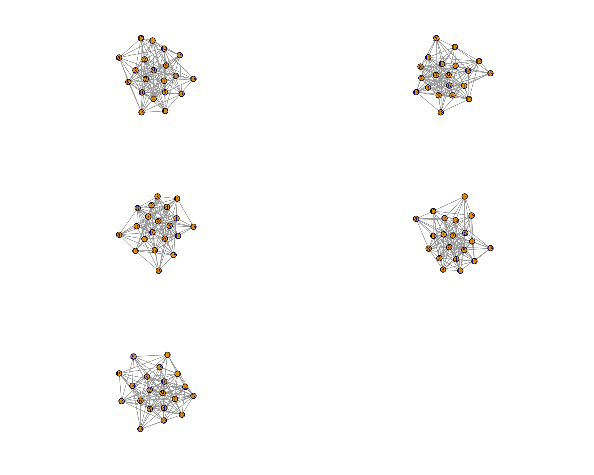

library(igraph)
library(ggplot2)
library(reshape2)
set.seed(24601)An introduction
Note: I have done a much better way (but I have left this up as a historical relic)
The goal is to create a spatial network that is scale-free with the user having the ability to vary the connectance. Assuming that \(n\) is the number of patches and \(l\) is the number of edges,the connectance (\(C\)) is then: \(\frac{l}{n^2}\).
Size of the network and connectance
The number of patches then determines the minimum and maximum number of edges possible. In an undirected graph, the minimum number of edges we can have is \(n-1\) . For the maximum number of edges: \(n \frac{(n-1)}{2}\). With both the number of patches and edges, we can then calculate the minimum and maximum value of connectance.
For example, if we have 20 patches (\(n = 20\)):
n = 20
min_edge = n - 1 # 19
max_edge = n * (n-1)/2 # 190 With the minimum and maximum number of edges being 19 and 190 respectfully, the minimum and maximum connectances are:
c(min_edge/(n^2), max_edge/(n^2))[1] 0.0475 0.4750Here is a short function to calculate connectivity when given a network:
###Put an igraph network
calculate_connectivity <- function(network){
nodes = vcount(network) #Code the number of vertex/patch/node
edges = ecount(network) #Count the number of edges
return(edges/(nodes^2)) #Return the connectance
}Therefore, with a given number of patches, I can calculate the number of edges needed to get the specific value of connectance.
Simulating creating spatial coordinates
First, we create a spatial network. We sample the coordinates from a uniform distribution with a maximum distance:
x.coordinates <- runif(n,0,10)
y.coordinates <- runif(n,0,10)
points <- cbind(x.coordinates,y.coordinates)I’m, however, more interested in getting the distances between points.
distance_matrix <- as.matrix(dist(points))This gives us a matrix that has the distances between points.
For each connectance value, calculate the number of edges
This is a function to calculate the number of edges. I want to get connectance values of 0.05, 0.10, 0.20, 0.30, and 0.40. Then the total number of edges needed based on the patch number is: \(C n^2\)
calculate_edge <- function(n){
connectance = c(0.05,0.10,0.20,0.30,0.40) #good ranges?
return(connectance * n^2)
}Therefore, if I want to create a network with this connectance value, here are the number of edges that I need:
cbind.data.frame(connectance = c(0.05,0.10, 0.20, 0.30,0.40),
edges = calculate_edge(20)) connectance edges
1 0.05 20
2 0.10 40
3 0.20 80
4 0.30 120
5 0.40 160Using Barabási–Albert for preferential attachment
I’m assuming that the spatial network is scale-free (Need to find more references to verify this). I don’t think this is a bad assumption. In igraph, to create a scale-free network with preferential attachment, we uses sample_pa. In this stochastic algorithm, you add new nodes and edges with each time step.
The only way to manipulate the total number of edges you want is by using the “out_seq” argment which states: Numeric vector giving the number of edges to add in each time step. Its first element is ignored as no edges are added in the first time step”. Therefore, you can ensure that you have the right number of edges added by summing the vector.
Here, is a function that lets me generate a number of edges to be added with each time step (I took code from this stackoverflow post) (Source: Generate Random network models with specified number of edges).
genOutSeq <- function(n, m) {
n <- n-1 # Shift it along
rem <- m %% n
c(0, rep(m%/%n + 1, rem), rep(m%/%n, n - rem))
}### The out_seq to be put into the network.
edges_list <- lapply(calculate_edge (20), function(x) genOutSeq(n,x))adjacency_matrix_list <- list()
for (k in seq(1,length(edges_list))){
net <- sample_pa(
n, #Number of patches
power = 1,
out.seq = edges_list[[k]], #This is the vector list
zero.appeal = 1,
directed = FALSE, #undirected
algorithm = c("psumtree"), #Prevents multiedges
start.graph = NULL)
###It is possible that I don't have the right number of edges
###so I must randomly add edges if there are some missing
nMulti <- sum(edges_list[[k]]) - gsize(net)
### We basically run this until we have the correct number of edges AND
### there are no mutliedges
while(is_simple(net) == FALSE){
for (i in 1:nMulti) {
vPair <- sample(1:n, size = 2)
net <- add_edges(net, vPair)
net <- simplify(net,
remove.multiple = TRUE,
remove.loops = TRUE)
}
}
###Convert graph to adjacency matrix
adj_matrix <- as_adjacency_matrix(
net,
type = c("both"),
sparse = "false")
### Save adjacency matrix ot a list
adjacency_matrix_list[[k]] <- as.matrix(adj_matrix)
}Combining the spatial distances and the scale-free network
I realized that I should simulate the same network with various distances between the patches.
###This generates the distance matrices between patches
generate_distance_matrix <- function(n, max_distance){
x.coordinates <- runif(n,0,max_distance)
y.coordinates <- runif(n,0,max_distance)
points <- cbind(x.coordinates,y.coordinates)
distance_matrix <- as.matrix(dist(points))
return(distance_matrix)
}
generate_distance_matrix(20,16) 1 2 3 4 5 6 7
1 0.000000 5.157415 15.193534 6.956727 10.595116 11.0874552 11.626523
2 5.157415 0.000000 12.584992 2.113439 7.126970 13.1673740 9.468252
3 15.193534 12.584992 0.000000 10.849847 5.601309 11.9520194 3.604385
4 6.956727 2.113439 10.849847 0.000000 5.273883 13.2341047 8.008133
5 10.595116 7.126970 5.601309 5.273883 0.000000 11.7723962 3.387007
6 11.087455 13.167374 11.952019 13.234105 11.772396 0.0000000 9.433731
7 11.626523 9.468252 3.604385 8.008133 3.387007 9.4337309 0.000000
8 4.873067 2.974354 10.609897 3.173989 5.727345 10.2786557 7.181685
9 14.337942 10.288828 5.060660 8.208842 3.892680 14.9467973 5.563506
10 9.978614 4.826225 11.473110 3.284642 6.138704 16.1859300 9.464290
11 2.330038 4.518944 12.907996 5.762383 8.536265 9.4506963 9.325471
12 7.855760 5.708047 7.382344 4.647664 3.186196 9.2709702 3.922495
13 5.868926 2.873714 9.966747 2.343386 4.823247 10.8959945 6.683709
14 13.941346 14.882039 9.894034 14.411544 11.511777 3.8356737 8.440559
15 11.518690 13.523889 11.903111 13.544006 11.931739 0.4457247 9.495183
16 12.320441 10.815616 3.780814 9.545150 5.198992 8.2663361 1.822419
17 10.769585 8.458042 4.425673 6.997295 2.596253 9.5504748 1.014959
18 13.825584 15.428669 11.728347 15.210645 12.855849 2.8619062 9.980735
19 6.031332 4.818469 9.162611 4.490833 4.960311 8.7478925 5.609609
20 10.288681 11.010526 8.654084 10.636661 8.434724 3.4550483 5.979122
8 9 10 11 12 13 14
1 4.873067 14.337942 9.978614 2.330038 7.855760 5.868926 13.941346
2 2.974354 10.288828 4.826225 4.518944 5.708047 2.873714 14.882039
3 10.609897 5.060660 11.473110 12.907996 7.382344 9.966747 9.894034
4 3.173989 8.208842 3.284642 5.762383 4.647664 2.343386 14.411544
5 5.727345 3.892680 6.138704 8.536265 3.186196 4.823247 11.511777
6 10.278656 14.946797 16.185930 9.450696 9.270970 10.895994 3.835674
7 7.181685 5.563506 9.464290 9.325471 3.922495 6.683709 8.440559
8 0.000000 9.475056 6.432780 2.983490 3.259538 1.101142 11.909801
9 9.475056 0.000000 7.503353 12.369914 7.064457 8.475221 13.900773
10 6.432780 7.503353 0.000000 9.016932 7.072227 5.493291 16.923081
11 2.983490 12.369914 9.016932 0.000000 5.631318 4.078112 11.958847
12 3.259538 7.064457 7.072227 5.631318 0.000000 2.843700 9.879585
13 1.101142 8.475221 5.493291 4.078112 2.843700 0.000000 12.214657
14 11.909801 13.900773 16.923081 11.958847 9.879585 12.214657 0.000000
15 10.619311 15.032079 16.462386 9.858851 9.506757 11.210803 3.471485
16 8.265301 7.118348 11.224512 9.990403 5.113260 7.956910 6.782439
17 6.227417 5.421074 8.549443 8.492820 2.973592 5.688215 8.954794
18 12.468831 15.518238 17.932983 12.048341 10.864687 12.926205 1.934995
19 1.896866 8.852179 7.497992 3.768494 1.878649 2.170724 10.088460
20 8.036498 11.497423 13.321285 8.190764 6.254737 8.388567 3.880907
15 16 17 18 19 20
1 11.5186899 12.320441 10.769585 13.825584 6.031332 10.288681
2 13.5238889 10.815616 8.458042 15.428669 4.818469 11.010526
3 11.9031106 3.780814 4.425673 11.728347 9.162611 8.654084
4 13.5440064 9.545150 6.997295 15.210645 4.490833 10.636661
5 11.9317388 5.198992 2.596253 12.855849 4.960311 8.434724
6 0.4457247 8.266336 9.550475 2.861906 8.747892 3.455048
7 9.4951835 1.822419 1.014959 9.980735 5.609609 5.979122
8 10.6193112 8.265301 6.227417 12.468831 1.896866 8.036498
9 15.0320794 7.118348 5.421074 15.518238 8.852179 11.497423
10 16.4623864 11.224512 8.549443 17.932983 7.497992 13.321285
11 9.8588514 9.990403 8.492820 12.048341 3.768494 8.190764
12 9.5067573 5.113260 2.973592 10.864687 1.878649 6.254737
13 11.2108027 7.956910 5.688215 12.926205 2.170724 8.388567
14 3.4714848 6.782439 8.954794 1.934995 10.088460 3.880907
15 0.0000000 8.258882 9.658070 2.417472 9.053737 3.539507
16 8.2588825 0.000000 2.675237 8.435509 6.495927 4.897432
17 9.6580700 2.675237 0.000000 10.374968 4.738255 6.119064
18 2.4174721 8.435509 10.374968 0.000000 10.757652 4.611757
19 9.0537368 6.495927 4.738255 10.757652 0.000000 6.238836
20 3.5395065 4.897432 6.119064 4.611757 6.238836 0.000000### Generate 5 distance matrix - ideally i should have a large number of simulated distance matrices (n = 1000)
distance_matrices<- replicate(5,generate_distance_matrix(20,16),simplify=FALSE)This code is to basically take the adjacency matrix that we created earlier with varying connectance and multiply it by the distance matrix.
spatial_scale_free_network <- NULL
for (i in seq(1, length(adjacency_matrix_list))) {
adjacency_matrix_list_Interest <- adjacency_matrix_list[[i]]
spatial_scale_free_network[[i]] <- lapply(distance_matrices, function(x) x * adjacency_matrix_list_Interest)
}Let’s plot it out. Here we are looking at the adjaceny matrix associated with low connectance.
graph_low_connectance<- lapply(
spatial_scale_free_network[[1]],function(x)
graph_from_adjacency_matrix(x, mode =
"undirected",
weighted= "TRUE"))Ok, you should be able to see different distances between patches.
par(mfrow=c(3,2))
for (i in seq(1,5)){
plot(graph_low_connectance[[i]],layout=layout.auto)
}Here is a high connectance one:
graph_high_connectance<- lapply(
spatial_scale_free_network[[5]],function(x)
graph_from_adjacency_matrix(x, mode =
"undirected", weighted= "TRUE"))par(mfrow=c(3,2))
for (i in seq(1,5)){
plot(graph_high_connectance[[i]],layout=layout.auto)
}